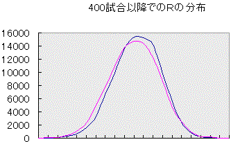
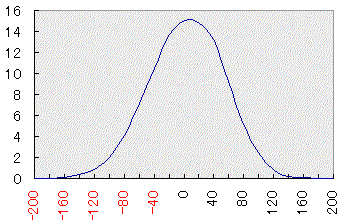
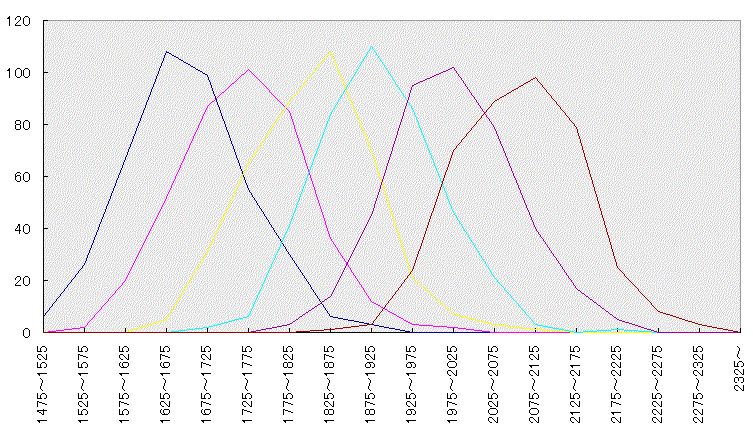

Ｒ2000のドヘタ 〜安定後、及び安定前のＲ分布解析〜
2000/10/1 （12/21データ追加） とつげき東北
導入：
とつがさんざん「新キャラを作るな！」と言ってきたことの理論的な裏付けと、「Ｒ２０００のドヘタ」が実在することを証明する。
データ部分は読みたくない、という人は、下の方の「Ｒ2000のドヘタ」だけ読んでね(笑)。
理論：
ある「安定Ｒ」＝「実力」を持つ人の、１試合ごとの勝率やＲ変動をコンピュータでシミュレートした。
普通は、打っている最中に実力が変化したりするために、具体的なデータから厳密なＲの分布を調べることは不可能に近いが、このようなコンピュータシミュレーションによって、Ｒの分布などを簡単に調べることができる。
用いたシミュレータはツールのコーナーに置いてありますが、あまり一般向けではないです。
「Ｒが安定した」後のＲの変動分布解析：
下の図は、400試合目以降に安定Ｒに到達してから、さらに１０万試合打つ間のＲの変化を調べ、横軸にＲ、縦軸にそのＲにいた試合数をプロットしたものである（400試合以降に、「安定Ｒ」＝「実力」と、実際のＲが初めて、（ほぼ）等しくなった瞬間を、以後「安定した」と表現する）。
中央の山の部分がちょうど安定Ｒになるように各々のグラフを横移動してある。

赤が安定Ｒ1500の場合、青が安定Ｒ1800の場合。
分布はほぼ同じ形状・同じ分散を示し、一度安定してからは、いかなる安定Ｒであっても、等しいＲの偏りが生ずると推測できる。
そこで、安定ＲからのＲの偏り方をグラフと表にしてみる。

横軸：平均Ｒからのずれ 縦軸：そうなった割合（％）
（12/21加筆 下のデータは、より正確で多量のデータを出力する SIMRate
v3.4にて５千万試合分取り直したものです。パーセントの小数切捨て）
R1690 - 1710 12309 (0 %)
R1670 - 1690 32543 (0 %)
R1650 - 1670 104744 (0 %)
R1630 - 1650 285850 (0 %)
R1610 - 1630 678219
(1 %)
R1590 - 1610 1394131 (2 %)
R1570 - 1590 2519207 (5 %)
R1550 - 1570 3996749 (7 %)
R1530 - 1550 5554739 (11 %)
R1510 - 1530 6769851
(13 %)
R1490 - 1510 7221129 (14 %)
R1470 - 1490 6764122 (13 %)
R1450 - 1470 5573879
(11 %)
R1430 - 1450 4026296 (8 %)
R1410 - 1430 2544139 (5 %)
R1390 - 1410 1404763 (2 %)
R1370 - 1390 674393 (1 %)
R1350 - 1370 287256 (0 %)
R1330 - 1350 109034 (0 %)
R1310 - 1330 34966 (0 %)
R1290 - 1310 1681 (0 %)
何試合打っても、安定Ｒから±40の範囲に半々程度の確率でいることがわかる。
（逆に言うと、400試合以降で安定した人のみかけのＲが、実力より50程度離れたくらいで「実力が変化した」と結論づけることは妥当ではない。よくあることだ。）
また、９８％以上の確率で、安定Ｒから±110の範囲にいる。
しかし、安定Ｒから110以上離れるようなことはほとんどなく、充分な試合数でのＲは、±100程度の範囲で信頼できる。
ある人が安定した後の、長期に渡る平均的なＲと、別の人のそれとが、１００以上離れている場合に、「強さが違う」と結論することは妥当である。
「新キャラ」のＲ変動の分布解析：

横軸：最高Ｒ 縦軸：その最高Ｒまで到達した回数
このグラフは、試合数０、Ｒ1500の、「新キャラ」を作ってから、400試合のうちに、Ｒが最高でどのくらいまで行くかを計算した結果である。各々「４００新キャラ分」のデータがある。
左から順に、「安定Ｒ1500の人」「安定Ｒ1600の人」・・・「安定Ｒ2000の人」である。
ごらんの通り、「安定Ｒ」よりも100以上高いＲが出るのが平均的である。
成績が「安定して」からは、安定Ｒより１００も高いＲを出すことは極めて困難であることは先に示したが、「最初の400戦」だとＲの変動が激しく、簡単にそうしたＲに到達することができる。
例えば「Ｒ1800の実力」の人が、新キャラを400個作り、各々400試合まで打った時の到達最高Ｒは次のようになっている。
1725以下 2回（0.5％）
1725〜1775 6回（1.5％）
1775〜1825 41回（10.3％）
1825〜1875 84回（21.0％）
1875〜1925 110回（27.5％）
1925〜1975 86回（21.5％）
1975〜2025 46回（11.5％）
2025〜2075 21回（5.3％）
2075〜2125 3回（0.8％）
2125〜2175 0回（0.0％）
2175以上 1回（0.3％）
たったＲ1800の実力でも、「新キャラ」を１０個ほど作ればＲ2000に到達する。
しかも、これは「単純に新キャラを１０個作った場合」である。
最初連続的に負けたり、Ｒが下がり始めると、すぐに「新キャラ」を作り直すことができるから、実際はもっと簡単である。
試みに、「100試合を超えた段階でＲ1600を切ったらキャラ作り直し」「自己最高Ｒより200以上下がり、かつそのＲが1700以下だったらキャラ作り直し」の２条件を付け加えて、同じ実験をした結果が以下の表である。
1825以下 0回（0.0％）
1825〜1875 34回（8.5％）
1875〜1925 114回（28.5％）
1925〜1975 124回（31.0％）
1975〜2025 82回（20.5％）
2025〜2075 32回（8.0％）
2075〜2125 12回（3.0％）
2125〜2175 2回（0.5％）
2175以上 0回（0.0％）
実際に打つ試合数自体は、それほど大差ないのだが、Ｒ2000達成確率が２倍以上（約２０％）になる。条件を工夫すればもっと上がるだろう。
安定して以降なら、Ｒ1800の人がＲ2000に到達することは20万試合やっても１度も起こらないことなのに、「新キャラ」なら５回に１回も行けてしまうのだ。
同様に、安定してからだと0.25％でしか到達できないＲ1950にも２回に１回到達する。
Ｒ1900でさえ、安定してからは２．５％しか到達できないが、新キャラならなんと５回に４回も到達できる。
ほとんどサギである(笑)。
「新キャラ」においては、いかに見かけのＲが実力より跳ね上がりやすいか、ということだ。
「Ｒ2000のドヘタ」：
東風にある程度慣れ、知り合いができたり団体に所属したりしている人に多いのが「新キャラ」を何度も作るタイプの人である。
なぜ彼らが「新キャラ」を作るのか？ ということに対する解答が、今回出せたように思う。
彼らの典型的行動を述べよう。
ここにＲ1800の人がいる。正真正銘、彼の「実力」はＲ1800である。
彼は、「新キャラ」でならしばしば到達する、実力（安定した後）では到底届かないような「高いＲ」を、自分の実力だと錯覚する。
彼は新キャラを作ってＲ1950に、Ｒ2000に到達し、「自分は強い」と勘違いする。
しばらくして「不調」（彼の実力なら当然時々切ってしまう低いＲ、例えばＲ1750）を迎えると、また「新キャラ」に手を出す。
「おかしい、前はＲ1950行ったのに、不調だ、このＨＮはついてない・・・」
彼が落胆するのは当然のことだ。
なぜなら、Ｒ1800の実力では、安定した後（例えば1000試合以上）にＲ1950やＲ2000になることは、ほぼ不可能だからだ。
彼は何度も新キャラを作り、何度かＲ1950前後に到達し、さらにそのキャラを「保存」し、見せかけのＲに固執するに至る。
こうした人物に共通する特徴は、いつ見てもＨＮが違っており、いつ見てもその試合数は1000を超えておらず、いつ見ても試合数をこなすことよりむしろ観戦やチャットにばかり熱心だということだ。
残念ながら、彼らは実力を高める努力をするかわりに、見せかけのＲを守る小技だけを身に付けているのだ。
かくして、「Ｒ2000のドヘタ」が生まれるわけである。
「強くなる」目的のために、「新キャラ」を作るメリットがどこにあるか？ ──どこにもない！
ＨＮによってツキが違うと考えるのはただの愚者。「気分転換」のためにキャラを変えなければならないのはただの精神薄弱。
それはおまえらが自分の無力を隠すための言い逃れに過ぎなかった。
そしておまえらは相変わらず「新キャラ」を作り、やれ200試合でＲ2000に行っただの、やれＲ2100を超えただのとわめきちらし、結局、我々の実力には遠く及ばないのだ。
1000試合もないキャラの見かけのＲになど、何の価値もない。
だからとつは「試合数をこなせ！」「新キャラを作るな！」と言う。
試合数をこなさない段階では、どうしてもみかけのＲが実力より大幅に高くなったりする。
そうなると見かけのＲに固執してますます打たなくなる。打たないと、実力がなかなかついていかない。
「実力向上パターン」から、「虚勢Ｒ固執パターン」に変化していくのだ・・・。
以上が、「麻雀の技術を理論的に向上させる」目的を持つしすま〜が、「新キャラ」を否定し、試合数をこなすことを奨励する理論的根拠である。
まとめ：
「Ｒが〜〜に到達した」とか「Ｒ〜〜のキャラを持っている」という低レベルな発言は、いいかげん、やめよう。
「おれはＲ〜〜で安定する実力を持つ」と堂々と言えるようになろう。
たまたまＲ2100に行った「実力1950」の人より、Ｒ2100には行ったことがない「実力2000」の人の方がすごいだろ？
もう、ええねん記念Ｒのうんぬんは！
実力をつけろ！ 実力を。
「続・Ｒ2000のドヘタ」に続く(笑)。